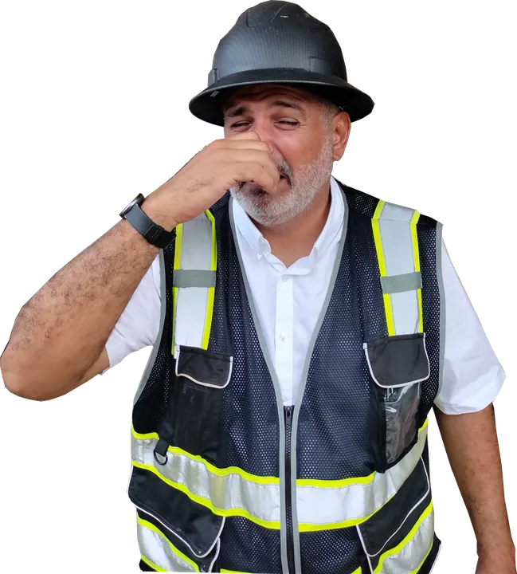

Memoria técnica de desechos y escombros: cuándo es obligatoria en Guayaquil

Toda obra genera escombros, y en una remodelación corporativa el volumen suele ser alto: demolición de tabiques, cielos rasos, pisos y fachadas. Por eso el Municipio de Guayaquil pide, en ciertos proyectos, una memoria técnica de manejo de desechos sólidos no peligrosos como parte del registro de construcción.
Cuándo es obligatoria
Según los requisitos del registro de construcción, se exige en:
- Edificios residenciales con más de 10 unidades de vivienda.
- Proyectos de uso distinto al residencial (comercio, oficinas, bodegas, industria, servicios) con área de construcción de 200 m² o más.
Es decir, casi cualquier local u oficina corporativa de tamaño medio la necesita. También se pide en las modificaciones de planos que entran en estos rangos.
Qué incluye
La memoria debe explicar el manejo del desalojo producto de la construcción durante todo el proceso constructivo y el manejo de los desechos cuando el edificio ya funcione. En la práctica cubre:
- Estimación de volúmenes de escombros por etapa (demolición, obra gris, acabados).
- Separación en obra y almacenamiento temporal sin ocupar la vía pública.
- Transporte con prestatarios autorizados y disposición final en sitios permitidos.
- Frecuencias de retiro y medidas para polvo y limpieza del entorno.
- Manejo de los desechos de la operación futura del local (cuarto de basura, recolección).
Por qué importa
Guayaquil tiene una ordenanza específica para el manejo y disposición final de escombros, actualizada con una ordenanza sustitutiva. Botar escombros en solares o en la calle es una de las faltas más visibles y sancionadas, y en una obra corporativa el problema no es solo la multa: es la imagen de la marca frente a vecinos y clientes.
Recomendación
Incluya el manejo de escombros en el contrato con la constructora: quién contrata el transporte, a dónde va el material y cómo se documenta. Así lo que dice la memoria se cumple en la obra.
Siga leyendo

Preparamos la memoria como parte del expediente de su obra
Referencia: memoria técnica de escombros desde $700.

Arquitecto en Guayaquil, Samborondón y Daule. Permisos municipales y obra para viviendas y empresas.